← Driftware · Deutsch | English | Español
Cartas de tarot para imprimir
Para el libro «El primer paso en el tarot». Aquí descargas las cartas gratis y haces con ellas una baraja, con imagen delante y reverso detrás. Lleva más o menos media hora. Necesitas una impresora o una copistería.
Abre esta página en un ordenador (no en el móvil). Imprimir y copiar a una memoria USB es más fácil allí.
¿Qué camino te conviene?
Elige el camino que te convenga y púlsalo. Solo tienes que leer ese camino.
Camino 1: Copistería
Descargar el archivo
Pulsa el botón azul. El archivo contiene todas las cartas, anverso y reverso, ya en el orden correcto.
Descargar las cartastodas las cartas, anverso y reverso · PDF, 28.5 MBCopiarlo a una memoria USB
Conecta la memoria USB al ordenador y arrastra el archivo descargado TarotAmbasCaras.pdf a la memoria. Después llévala contigo.
Consejo: envíate también el archivo por correo electrónico. Si la memoria falla, aún lo tienes en el móvil.
Decir en la copistería
Di en la tienda exactamente esta frase (o enséñala en el móvil):
«Por favor, imprima este archivo a color en A4 a doble cara, girando por el lado largo, en cartulina de 200 a 250 gramos, a tamaño real. Después, por favor, recórtelo.»
Para {seiten} hojas suele costar solo unos pocos euros.
Listo
Baraja las cartas como se explica en el libro. Que las disfrutes.
Camino 2: Impresora con impresión automática a doble cara
Descargar el archivo
Un archivo con todo dentro: anversos y reversos ya se alternan.
Descargar las cartastodas las cartas, anverso y reverso · PDF, 28.5 MBAbrir el archivo y elegir «Imprimir»
Configura esto:
| Tamaño de papel | A4 |
| Escala | 100 % o «Tamaño real». No «Ajustar a la página». |
| Color | Color (no blanco y negro) |
| Calidad | Alta o «Foto» |
| A doble cara | Sí. Se imprimen las dos caras de la hoja. |
| Giro | Por el lado largo. Según el programa aparece como «Encuadernación por el borde largo» (Mac) o «Voltear por el lado largo» (Windows). |
Primero una hoja de prueba
Imprime solo las páginas 1 y 2 (es una hoja, anverso y reverso). Sostenla a contraluz. ¿Los reversos quedan exactamente detrás de las cartas? Entonces imprime el resto. Si no, lee el camino «A mano» más abajo.
Conviene saber
- Impresora láser a color: la mejor ★★★. Nítida, nada se emborrona.
- Copistería o imprenta: muy buena ★★★. Lleva el archivo en una memoria USB.
- Impresora de inyección de tinta: funciona ★. La tinta puede emborronarse. Deja secar las hojas al menos una hora tras imprimir. Después rocíalas con fijador en spray o barniz transparente, probándolo antes en un resto.
- Papel: lo mejor es cartulina de 200 a 250 g/m² (el manual de tu impresora dice si puede con ella). Si no, papel normal y que lo peguen sobre cartulina en una copistería.
Recortar
Alrededor de cada carta hay pequeñas rayas en los márgenes (marcas de corte). Corta de modo que ya no veas las rayas.
- Lo más fácil: una guillotina de papel. En la copistería te recortan las cartas con gusto.
- Con tijeras: primero corta las hojas en tiras y luego cada tira en cartas sueltas.
- Cada carta mide entonces 6,2 × 9,6 cm.
Listo
Baraja las cartas como se explica en el libro. Que las disfrutes.
Camino 3: Impresora que solo imprime por una cara (girar las hojas a mano)
Descargar los archivos
Necesitas cuatro archivos, uno tras otro. Se descargan a tu ordenador, todavía no se imprime nada.
A · Prueba ANVERSO1 página, primero en papel normal · PDF, 35 KBB · Prueba REVERSO1 página, se imprime tras girar la hoja · PDF, 35 KBC · Cartas ANVERSO13 hojas con las imágenes · PDF, 27.8 MBD · Cartas REVERSO13 hojas con el reverso · PDF, 735 KBPrueba: así averiguas cómo gira tu impresora el papel
Cada impresora toma el papel de forma distinta. Con esta prueba te ahorras desperdiciar cartulina.
- Carga papel normal e imprime el archivo A (Prueba ANVERSO).
- Saca la hoja y dale la vuelta como a la página de un libro (de izquierda a derecha, véase la imagen). Vuelve a colocarla exactamente como estaba.
- Ahora imprime el archivo B (Prueba REVERSO).
Sostén la hoja a contraluz. ¿Ves lo siguiente?
✓ REVERSO se lee del derecho (flecha hacia arriba) y las dos A quedan una detrás de la otra
Perfecto. Para los reversos usa el archivo D · Cartas REVERSO, que ya has descargado.
✗ REVERSO está boca abajo
No pasa nada. Descarga este archivo, existe justo para este caso, y úsalo en lugar de D:
D2 · Cartas REVERSO, girado13 hojas, solo si REVERSO estaba boca abajo · PDF, 760 KBRecuerda cómo colocaste la hoja. Harás exactamente lo mismo con las cartas.
Imprimir las cartas: hoja por hoja
Ahora sobre cartulina (o el papel que quieras usar). Siempre una hoja cada vez:
- Abre C · Cartas ANVERSO, elige en el diálogo de impresión «Páginas: 1» e imprime.
- Saca la hoja, dale la vuelta como en la prueba y vuelve a colocarla del mismo modo.
- Abre D · Cartas REVERSO (o D2), elige «Páginas: 1» e imprime. La primera hoja está lista, anverso y reverso.
- Lo mismo con la página 2, después la página 3, después la página 4 y así hasta la página 13.
| Tamaño de papel | A4 |
| Escala | 100 % o «Tamaño real». No «Ajustar a la página». |
| Color | Color (no blanco y negro) |
| Calidad | Alta o «Foto» |
En el borde superior de cada hoja pone «Hoja 1 de 13» y «Anverso» o «Reverso». Así no pierdes el hilo, y el margen se corta después.
Más rápido: puedes imprimir primero todos los anversos y después darle la vuelta a toda la pila. Entonces asegúrate de que la hoja 1 se alimente la primera al imprimir los reversos. Si dudas, quédate con hoja por hoja.
¿En qué imprimir?
- Impresora láser a color: la mejor ★★★. Nítida, nada se emborrona.
- Copistería o imprenta: muy buena ★★★. Lleva el archivo en una memoria USB.
- Impresora de inyección de tinta: funciona ★. La tinta puede emborronarse. Deja secar las hojas al menos una hora tras imprimir. Después rocíalas con fijador en spray o barniz transparente, probándolo antes en un resto.
- Papel: lo mejor es cartulina de 200 a 250 g/m² (el manual de tu impresora dice si puede con ella). Si no, papel normal y que lo peguen sobre cartulina en una copistería.
Recortar
Alrededor de cada carta hay pequeñas rayas en los márgenes (marcas de corte). Corta de modo que ya no veas las rayas.
- Lo más fácil: una guillotina de papel. En la copistería te recortan las cartas con gusto.
- Con tijeras: primero corta las hojas en tiras y luego cada tira en cartas sueltas.
- Cada carta mide entonces 6,2 × 9,6 cm.
Listo
Baraja las cartas como se explica en el libro. Que las disfrutes.
Las cartas de estos archivos
78 cartas: las 22 cartas de los Arcanos Mayores y las 56 de los Arcanos Menores (Bastos, Copas, Espadas, Oros). Es una baraja de tarot completa.
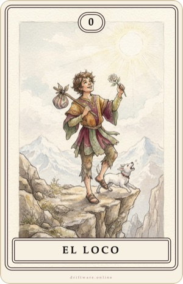
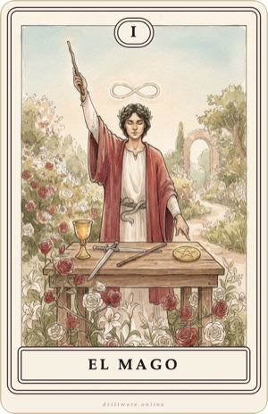
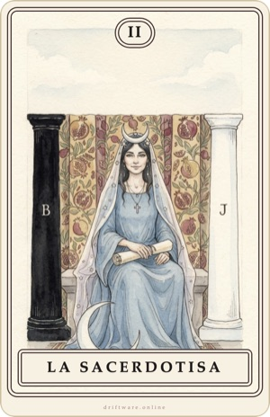
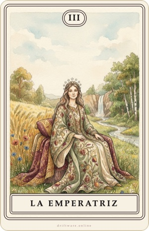
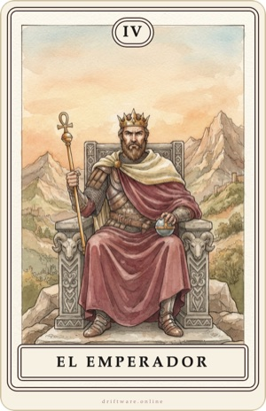
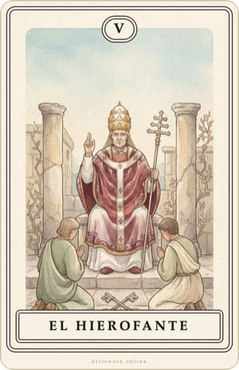
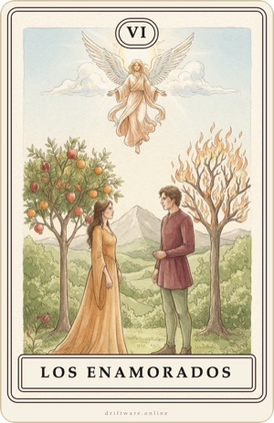
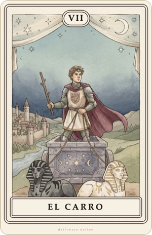
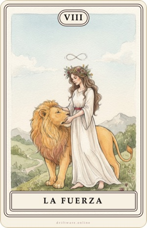
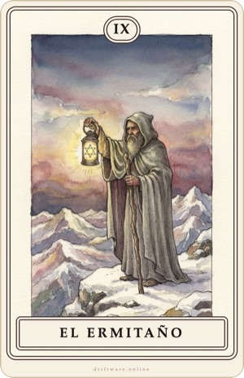
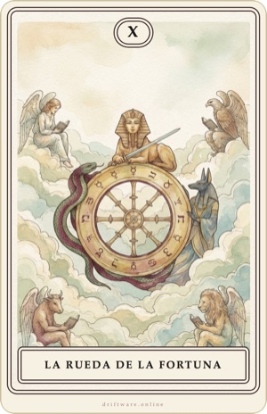
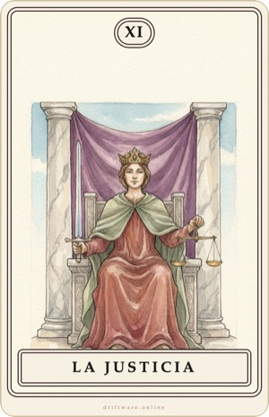
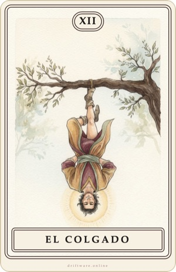
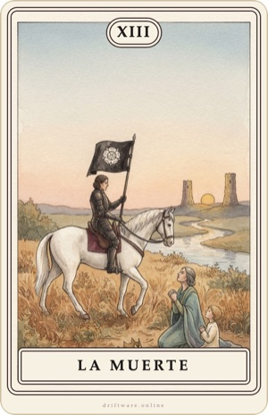
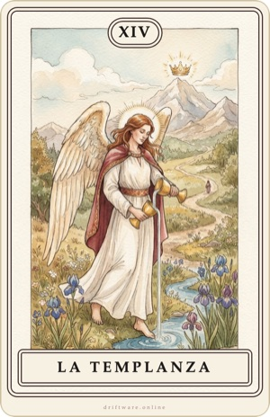
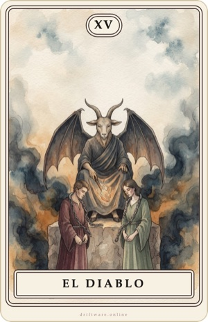
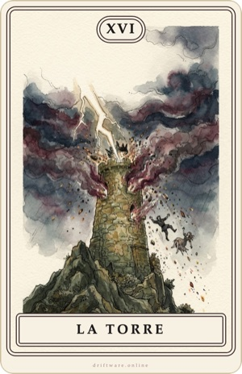
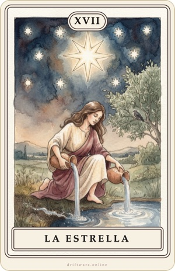
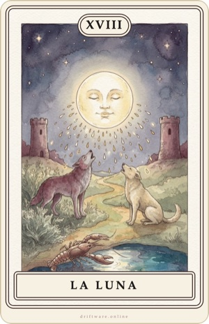
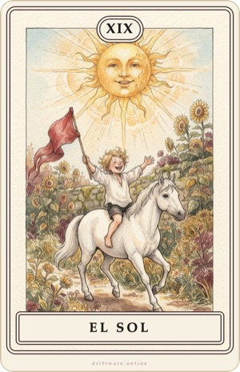
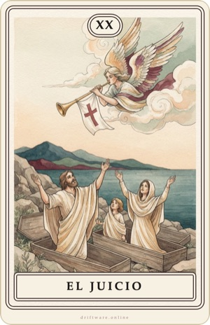
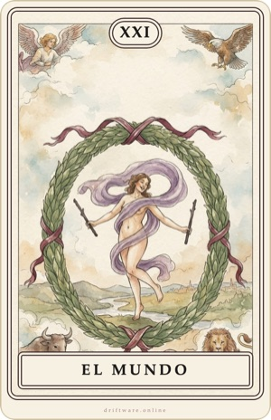
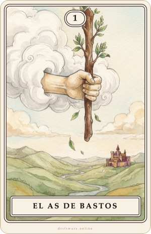
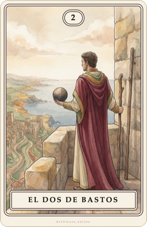
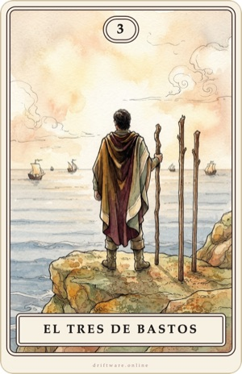
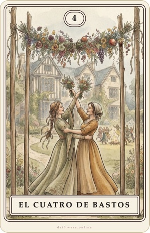
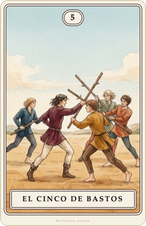
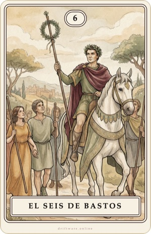
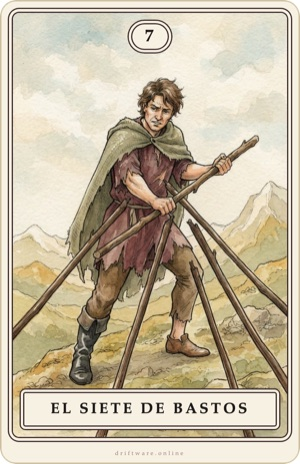
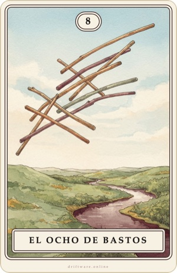
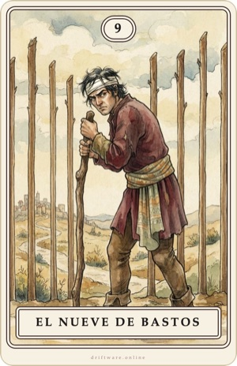
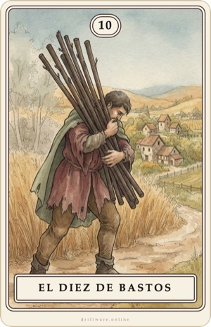
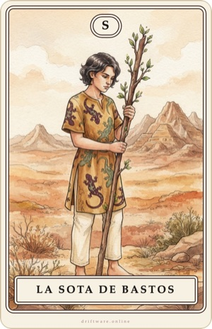
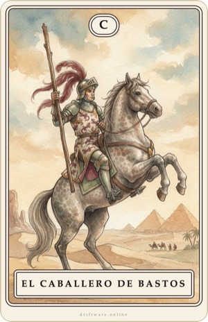
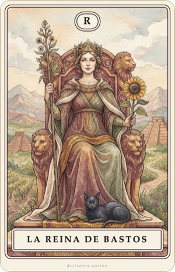
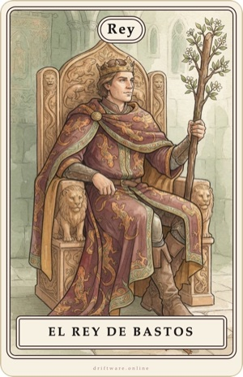
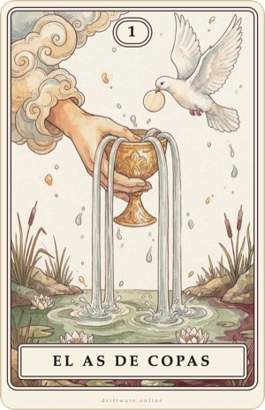
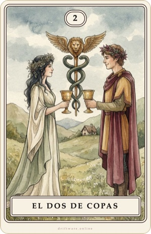
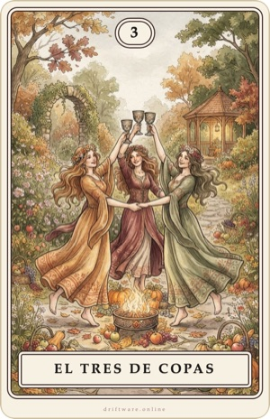
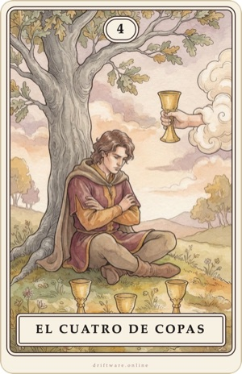
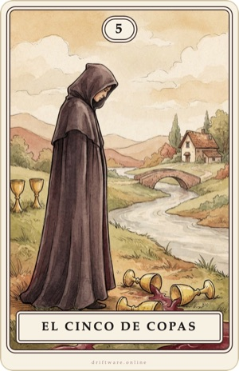
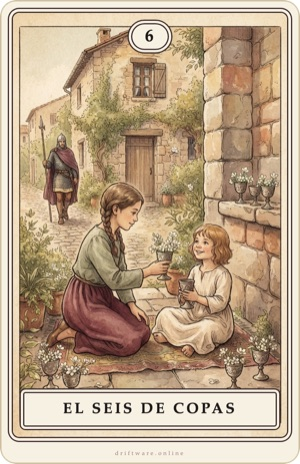
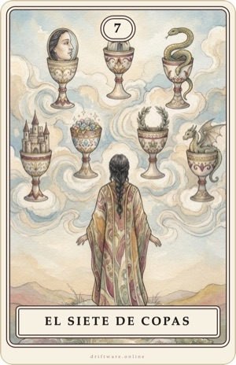
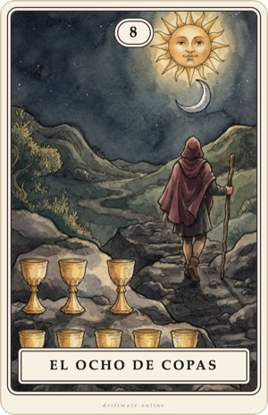
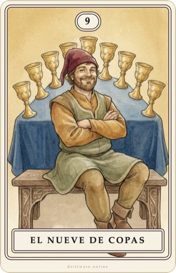
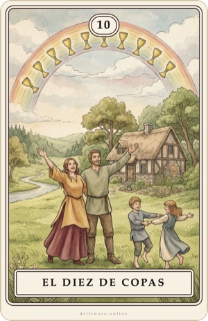
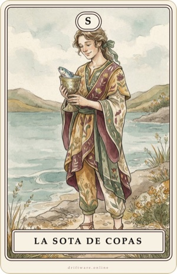
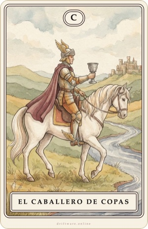
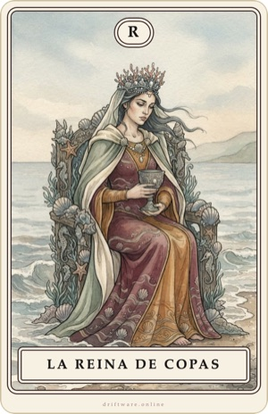
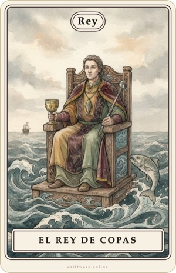
Va bien con el libro «El primer paso en el tarot». Ver el libro y la muestra gratuita
Uso: puedes imprimir las cartas para uso personal. No está permitido cederlas, venderlas ni usarlas para barajas propias sin consentimiento. © 2026 Driftware. Las imágenes se generaron digitalmente a partir de descripciones propias y se diseñaron con programas de edición de imagen.
¿Preguntas o un error? info@driftware.online · Aviso legal (alemán)